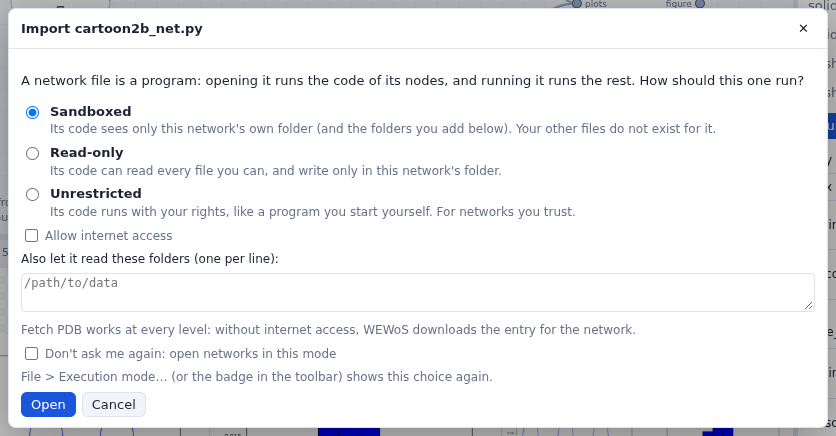
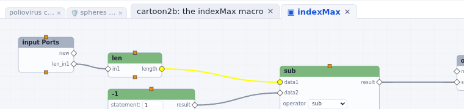
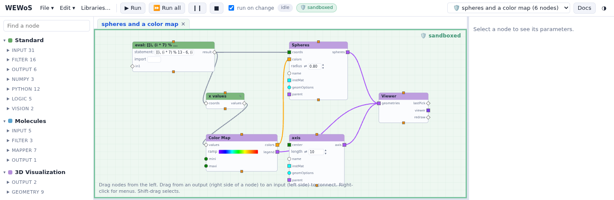

Examples and open networks
Open an example or a network file, move between the networks you have open, close them, and choose how each one runs.
Open an example

Clicking an example asks how it should run (its execution mode), opens it as a new network, and copies the data files it reads into the network's folder. Press Run all to run it. The examples are good starting points:
| group | examples |
|---|---|
| WEWoS | contacts of a picked residue (click the inhibitor of HIV-1 protease: a Python node lists the residues within a cutoff, drawn, plotted and written to a CSV file), crambin surface, helical crambin, icosahedral spheres, iterate squares, map isosurface, pick a residue, plots, poliovirus capsid (Mol*), spheres and a color map, viewer snapshot |
| Vision tutorial (MGLTools 1.5.3) | the networks of the tutorials, and an empty network that has the tutorial's data in its folder |
| Vision examples (MGLTools) | cpk, icos, image filters, and the network of figure 1 of the 2002 ViPEr paper |
| Vision matplotlib examples (MGLTools) | 44 plots: lines, scatter, histograms, bars, pies, polar, contours, spectra, quiver, tables, legends… |
Open or import a network file
- File > Open network (.wnet.json)… opens a network saved by WEWoS, from your computer.
- File > Import a Vision network (*_net.py)… converts a network saved by MGLTools Vision, without running it, and reports what it could not carry over (see importing).
- Dropping a
.wnet.jsonor*_net.pyfile on the page does the same.

Each opened network gets its own folder, and the network you were working on stays open.
Moving between open networks

- File > New network opens a new, empty network. Opening a file, importing a Vision network or opening an example also adds a network: the one you were working on stays open, with its results.
- Every open network has a tab above the canvas, in the order they were opened. The network on screen has a full tab, followed by the tabs of the macros you opened inside it (double-click a macro). The other networks have thin tabs, marked 🛡 when they run isolated: click one to show that network. The menu at the top right lists the open networks too.
- Each network keeps its macro tabs, and the tab that was in front, when you switch to another network and back, and when you reload the page.
- Several browser tabs can show the same server, each with its own network on screen.
Closing a network
- The ✕ on a network's tab, or Close network… in the File menu and in the menu of the empty canvas (right-click the background), closes the network. A network with nodes asks first.
- Its folder stays on disk, with a last autosave, so File > Open network brings it back. Closing an isolated network ends its process.
- Closing the network on screen shows the one next to it in the tabs, or a new empty network when it was the last.
- The ✕ on a macro's tab closes the tab only.
- The empty network a page starts with goes away by itself when you open another one.
How each network runs: execution modes

A network file is a program: opening it runs the code of its nodes, and running it runs the rest. Vision ran every network with your rights. WEWoS runs the networks you build that way, and lets a network from someone else run confined by the operating system:
| mode | its code can read | its code can write | internet |
|---|---|---|---|
| 🛡 Sandboxed | its own folder and the folders you add | its own folder | only if you allow it |
| 🛡 Read-only (not on Windows) | every file you can read | its own folder | only if you allow it |
| 🔓 Unrestricted | every file you can read | every file you can write | yes |
- Opening or importing a network file, and opening an example, ask which mode to use; sandboxed is offered the first time. Don't ask me again uses the mode you pick for the networks you open afterwards.
- New networks, which you build yourself, run unrestricted.
- The badge next to the run status shows the mode of the network on screen; an isolated network's canvas is framed and tinted, green when sandboxed and amber when read-only. Click the badge, or use File > Execution mode…, to change it.
- Fetch PDB works in every mode: WEWoS downloads the entry for the network.
The Execution modes page tells more: granting folders, internet access, Force stop, and how each operating system confines a network.